平台
Sunfire 是一个企业级监控平台，与 Datadog 同类型。覆盖 Monitor、APM、指标 Explore、Trace、拓扑、日志、大盘、Event、Problems 等核心模块。
服务 37 个租户，近 20,000+ 应用。租户横跨不同业务的产品线，用户角色包含应用开发工程师和运维 / SRE 两类。
我担任 Sunfire 的 Design Owner 已近 4 年，全量负责平台的产品设计——从顶层信息架构到模块交互细节。
信息架构
三视角 · 工具层 · 顶部导航
核心判断：信息架构从领域事实推导。
三视角对应观测的三种基本对象——应用、业务、个人。工具层对应能力本身，不归属于任何视角。顶部导航对应跨视角、跨场景的查找与切换需求。
判断 —— 基于 11 条用户访谈、JTBD 任务拆解。
菜单 —— 基于真实埋点数据，结合 Datadog 菜单职能与核心场景流程的对比。
最终推导结构 —— 顶部全局导航 + 左侧菜单（三视角 + 工具层）。
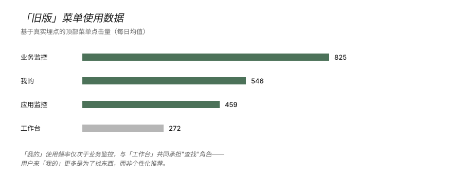
研究中的一个关键发现：「我的」承载的不是"个性化推荐"，而是用户"找东西"的需求——关注内容是场景依赖的，不是一份固定清单。这个发现重新定义了「我的」视角的功能边界——同时也让原本独立的「工作台」菜单不再需要存在，相关能力收敛进「我的」（详见下一章）。
顶部导航承载这一层能力——不归属于任何视角，但用户在任何场景下都可能需要：跨相关平台的菜单切换、全局搜索、常用功能、最近、收藏。这些能力收敛在顶部，让用户能跨视角、跨场景地快速到达目标。
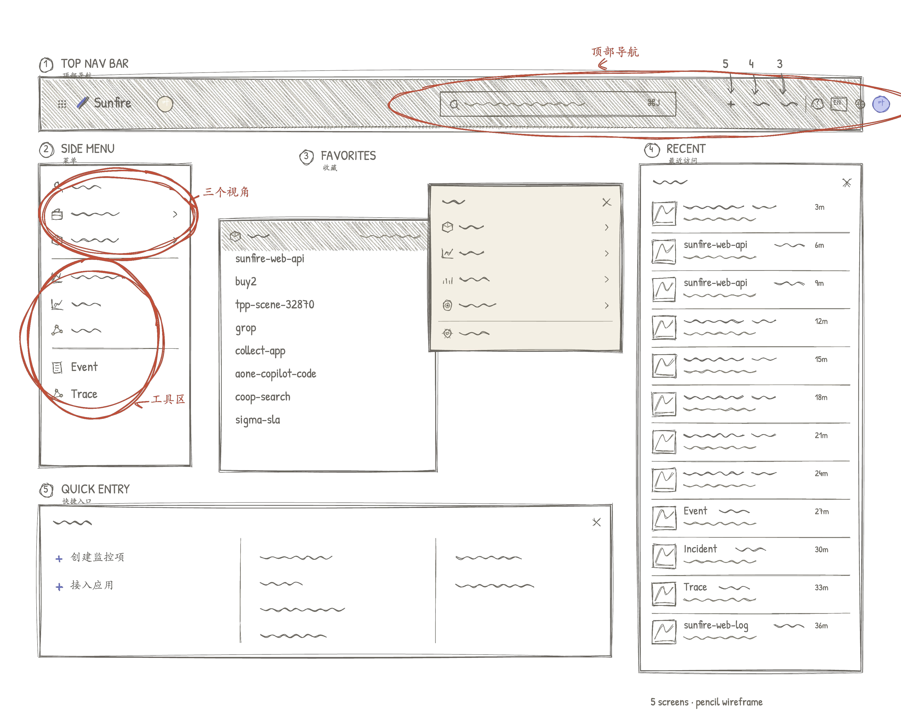
完整的研究材料、问题诊断、设计原则推导和方案设计过程，见文章《复杂的 Obs 产品：三个体验设计判断》。
「我的」工作台
关注 = 主动管理的资产 + 当下场景需要的对象
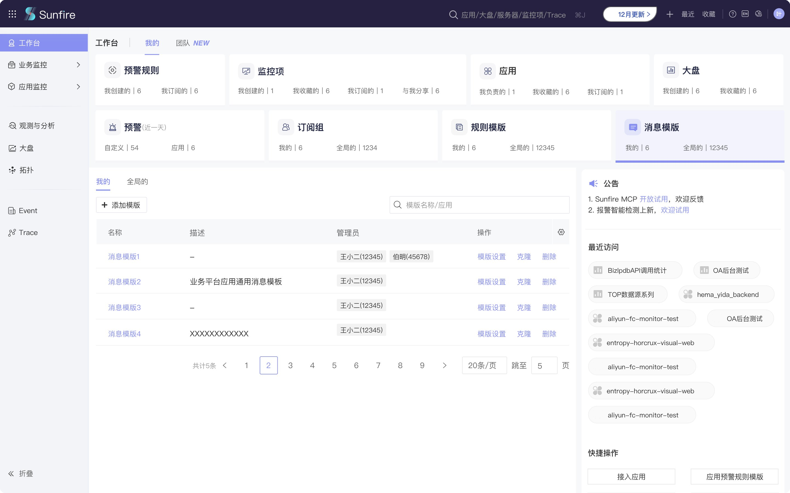
核心判断：用户的关注内容是场景依赖的，不是固定清单。
升级后的「我的」重新梳理整合了原「工作台」菜单的能力——旧版「我的」只承载用户的个人资产（预警规则、监控项、应用、大盘等），旧版「工作台」承载关注的报警事件、公告、功能入口等"当下场景需要看到的内容"。新版「我的」把两者合并为一个完整的个人视角。
页面聚合三类信息：用户的资产管理、最近访问、平台公告。关注模块按"资产类型 × 用户关系"二维结构组织，告警类内容置顶。
更详细的判断推导见文章《复杂的 Obs 产品：三个体验设计判断》。
Monitor 重构
类型统一 · 配置流程的简化
核心判断：Monitor 重构的首要动作是类型统一——原本多种监控项类型合并为一个「通用监控项」。统一之后，原本不同类型各自的配置流程需要被新结构承接，并在此基础上做进一步的简化。
类型统一
原本平台里有多种独立的监控项类型——每种都有自己的配置入口、字段、流程，用户需要先对各类监控项建立认知才能做选择。
新方案把这些类型合并为「通用监控项」。一个监控项里可以建任何类型的指标，也可以同时建多种类型指标。用户不再有这部分的认知负担，无需再去建立类型认知。
上线后的使用验证
通用监控项作为统一入口提供后，旧分类监控项的入口并未下线，在产品里保持同等可见——用户配置时可以自由选择用哪一种。近 90 天的真实使用数据：
整体对比
- 通用监控项：累计访问 23,219 次，独立用户 984，人均 23.6 次
- 旧分类监控项：累计访问 152 次
- 通用 vs 旧分类 ≈ 153 : 1
行为结构
- 旧分类的残余访问全部是跨租户分散、单租户低频的长尾——使用最多的一类也仅 81 次、散落在 5 个租户
- 37 个租户中，至少 15 个在新旧入口同等可见的条件下，从未使用过旧分类
在两个入口完全平等竞争的前提下，通用入口已成为用户工作流的一部分（984 UV、约每 4 天一次），旧分类则失去了用户基础。这印证了类型统一的核心判断——用户配置监控项时真正需要的是"我要监控什么数据"，而不是"我要选哪种类型"；前置的类型区分本身就是设计强加给用户的负担。
步数缩短
通用编辑面板替代了原本相同操作的重复弹窗。在此基础上，对原监控项类型里 TOP 6 的类型分别做了步数测算——旧版 11-14 步（部分步骤随配置数量重复），新方案收敛到 5-6 步。
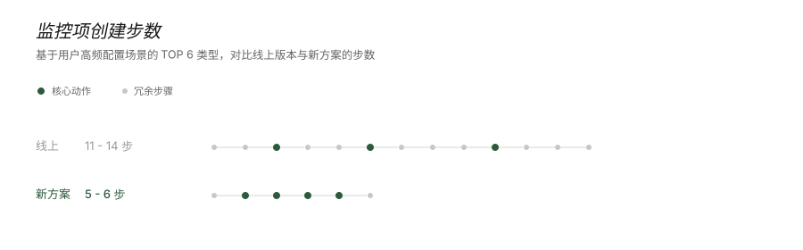
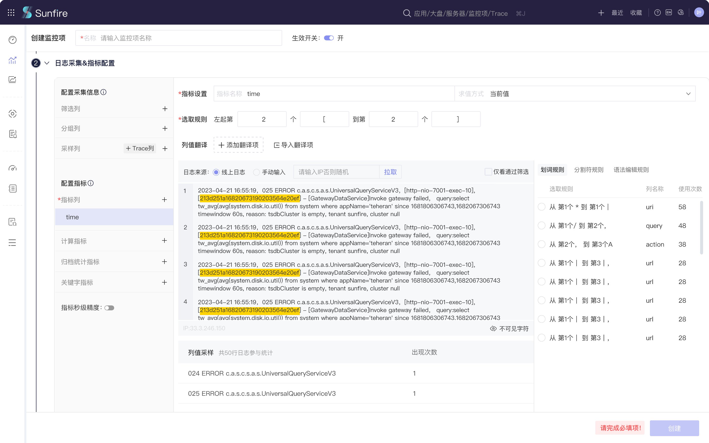
流程解耦
原本监控项和规则是绑死的，规则只能用监控项中的指标，无法跨监控项选指标。且监控项类型在统一之前被切分得很细，规则的可配置范围就进一步被限制。
新方案把两者解耦：规则可以选任何监控项的指标来组合条件，组合的自由度和可能性都大幅扩大。这让规则能承接更复杂的业务场景，也支持用户配出更自定义化的预警规则。
跨模块的组件统一
识别共性 → 专用组件
示例：Filters 查询
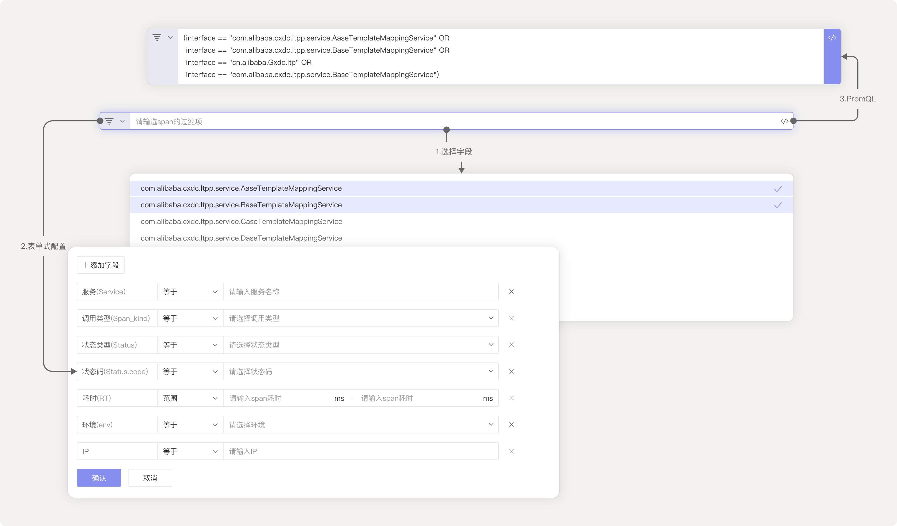
示例：指标选择
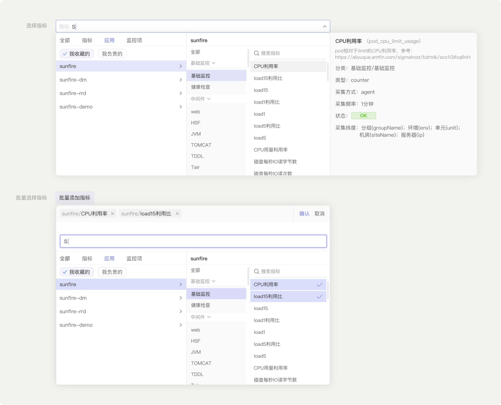
核心判断：识别跨模块的共性，统一为专用组件。
平台里有些操作模式天然跨模块——查找指标、组合 filter、选择时间范围、选择应用——它们在不同模块出现时承担的是同一种交互。把这些跨模块共性识别出来，统一为这个领域的专用组件，让它们在不同模块里保持一致的样式和操作逻辑。
这些组件也支撑了跨模块的数据联动——从告警跳到对应的 Trace、从指标异常跳到拓扑节点等等，背后都依赖统一的组件 + 数据结构。
其中 Filters 组件作为 Sunfire 跨模块复用最高的核心组件，其设计抽象详见末尾的「延伸阅读 · Filters」。
▸ 展开看更多模块
Sunfire 5 年里我还做过这些模块——
- 拓扑 0 - 1 构建
- 支持多对象类型、双数据源（指标上下游 / Trace 链路），多 filter 组合查询，节点可展开详情。
- Problems 0 - 1 构建
- 异常诊断与聚合：将同一根源的多个异常聚合为一个 Problem，支持根因分析与追踪。
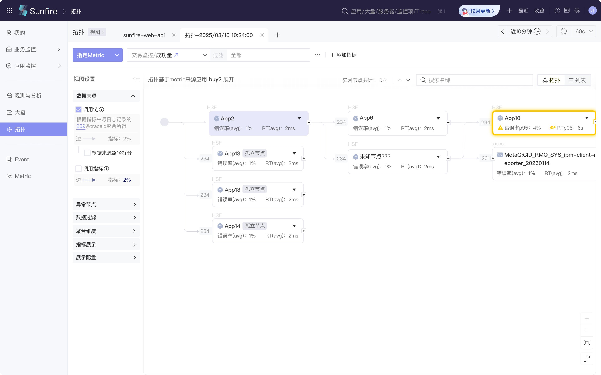
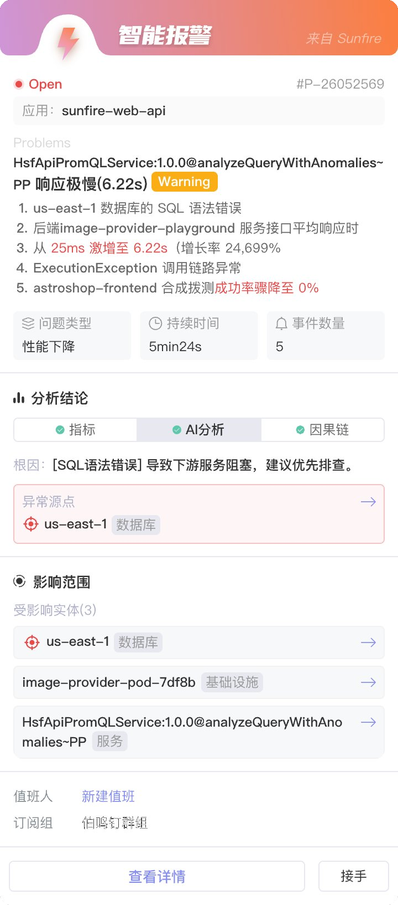
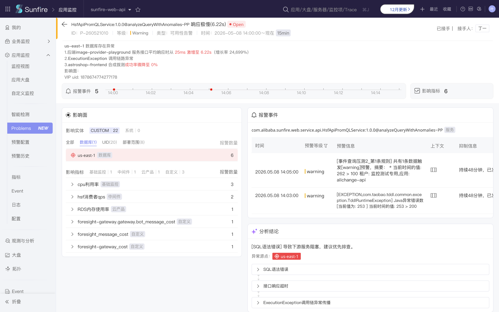
Filters
三种形态，共享一份过滤逻辑
Filters 是 Sunfire 跨模块复用最高的核心组件之一。它支持三种交互形态——代码、选择框、表单——每种形态对应不同的输入方式，但共享同一份过滤逻辑，可以实时互转。
这套抽象不是一次设计出来的，而是 Sunfire 中后期沉淀的结果。
演进 · 从场景适配到用户习惯适配
早期做拓扑、Trace、规则配置等模块时，Filters 是按场景各自实现的——拓扑里用选择框，规则配置里用表单，Trace 查询里用代码态。每个模块都为自己的场景选了"最合适"的形态。
但随着 Sunfire 用户规模扩大，跨场景行为浮现出来——
- 同一个用户，在拓扑里习惯点选，在规则配置里却想用代码态快速复制；
- 不同用户，在同一个 Metric Explorer 页面，有人想点选筛选、有人想直接写表达式查询。
形态的合适与否不是场景决定的，是用户习惯决定的。早期"按场景固定一种形态"的假设——这个场景的用户都偏好同一种输入方式——在真实使用中并不成立。
迭代后的判断：场景决定开放哪几种形态，用户习惯决定用哪种。形态可组合可拆分，可在同一个 Filters 实例里实时互转。
五个场景的形态分布
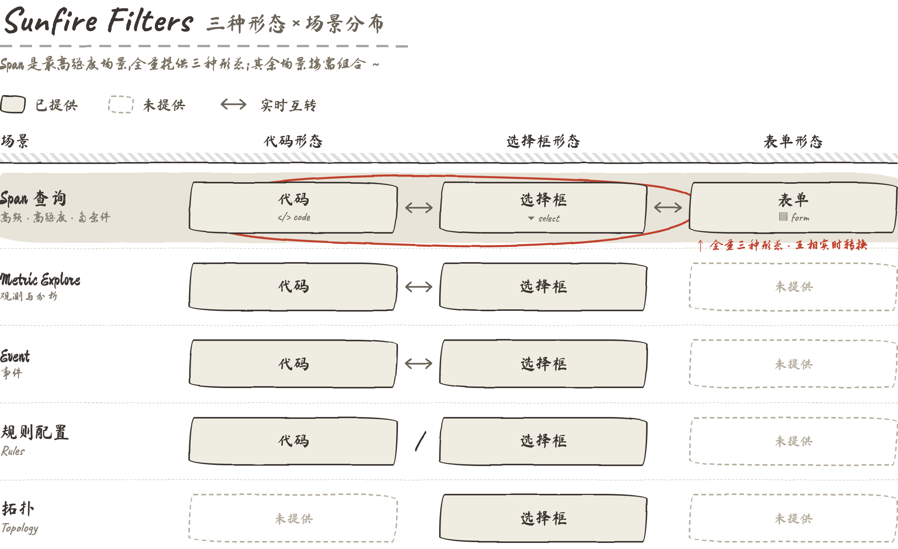
五个核心场景的形态分布，呈现一个从全量到克制的光谱——
Span 查询是这套抽象的压力测试点。Span 是 Trace 里粒度最细的单位，一次查询可能涉及几十个过滤条件，使用频率和强度都远高于其他场景。在这种场景下，任何一类用户被排除都会导致不可用——所以 Span 必须全量提供三种形态，必须支持任意两两互转，必须把每一种形态的完成度做到最高。这是整套抽象在最高压力下的可用性证明。
Metric Explorer、规则配置、Event 提供代码 + 选择框。这些场景既有探索性查询（代码态高效），也有日常筛选（选择框低门槛）。两种形态并存、实时互转，让不同习惯的用户都能找到自己的输入方式。
拓扑只提供选择框。用户在拓扑里以快速筛选为主，代码态会增加认知负担、表单则太重。提供单一形态是判断，不是省事——克制和扩展同样是设计能力。
历史记录 · 让"习惯"不只是输入方式
选择框和表单形态各自保留用户最近 5-10 次的 Filters 组合记录，可以一键复用。这件事看起来是个小功能，实际上是对"以用户习惯为中心"判断的延伸——
输入方式是用户的习惯，反复使用的查询模式也是用户的习惯。选择框和表单用户的查询通常是高频、相似度高的，历史记录直接承接这种重复模式，把"配置成本"从每次都付，降到只在第一次付。
代码形态没有独立的历史记录入口——它只是一个简洁的输入框。但通过形态间的实时互转，用户在选择框或表单里复用了历史记录之后，切到代码态就能直接看到对应的代码表达。复用「实时互转」这个底层能力，让代码态不需要单独的历史记录机制，也能享受到复用价值。
历史记录的范围限定在单场景内，不跨场景共享。这是基于真实使用行为的判断——跨场景复用 Filters 的实际频率不高，因为不同场景的过滤条件结构差异大，强行打通反而会增加用户找回历史时的认知噪音。克制和扩展同样是设计判断。
收束
这套抽象的本质——输入方式和复用模式都属于用户习惯，场景只决定开放多少种形态。它带来的结果是：跨场景配置可以共享、用户协作不会产生认知断层；新场景接入时，只需回答"开放哪些形态、提供怎样的复用机制"，而不再是"该用哪种 filter"。
关于这些判断背后的设计思考——
→ 《复杂的 Obs 产品：三个体验设计判断》